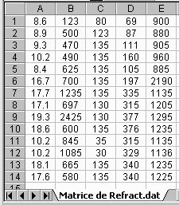
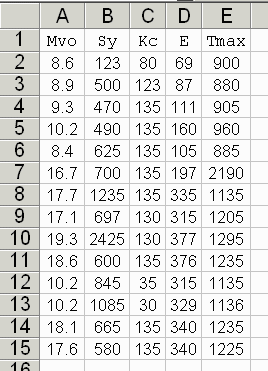

Matlab permet de lire directement un fichier Excel contenant un tableau numérique.

On peut charger le fichier dans la mémoire en exécutant la fonction xlsread.
Exemple :
>> clear
>> Mat = xlsread('Refr_num.xls');
>> whos
Name Size Bytes Class
Mat 14x5 560 double array
ou encore :
>> fichier ='Refr_num.xls'; >> matrice = xlsread(fichier); >> whos Name Size Bytes Class fichier 1x12 24 char array matrice 14x5 560 double array
C'est une méthode similaire à la lecture d'un fichier ASCII par la fonction
load,
Exemple (rappel) :
>> fichier ='Refract.dat'; >> matrice = load(fichier); >> whos Name Size Bytes Class fichier 1x11 22 char array matrice 14x5 560 double array
Il est également possible de lire un fichier Excel contenant aussi des
titres à chacune des colonnes (et seulement).
Exemple :
>> clear
>> Mat = xlsread('Refract.xls');
>> whos
Name Size Bytes Class
Mat 14x5 560 double array

Pour plus de détails :
<< doc xlsread